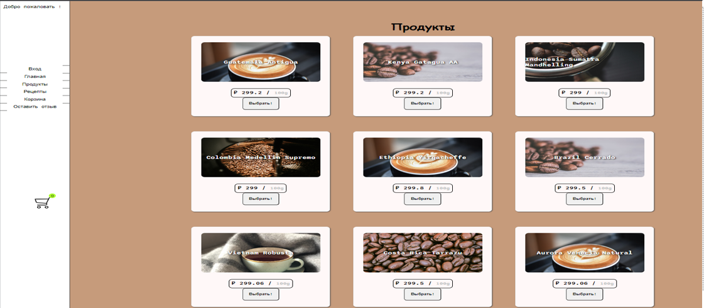
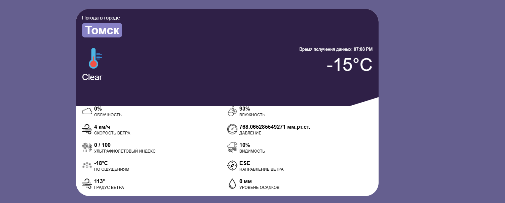
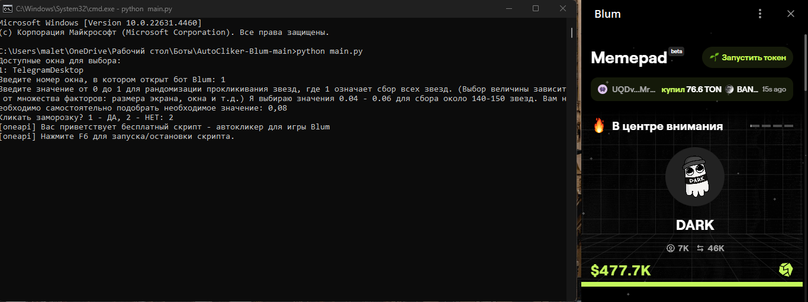
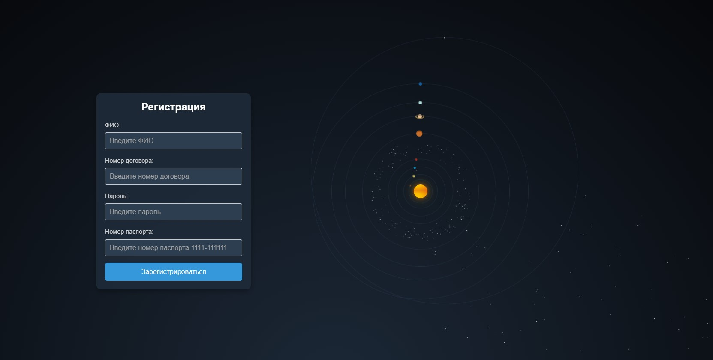
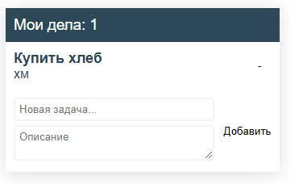
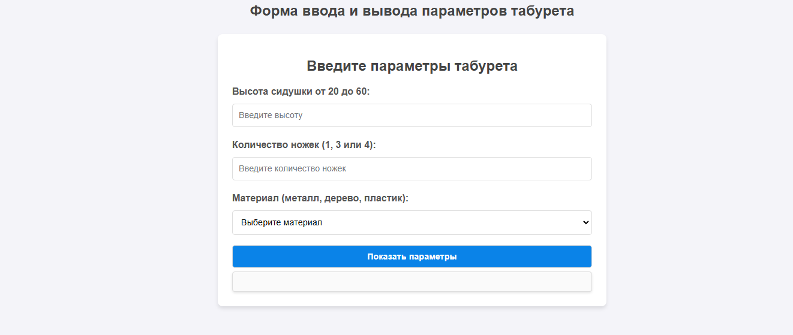
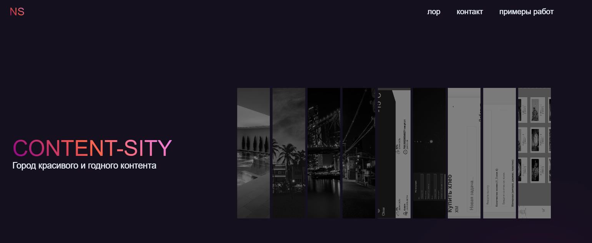
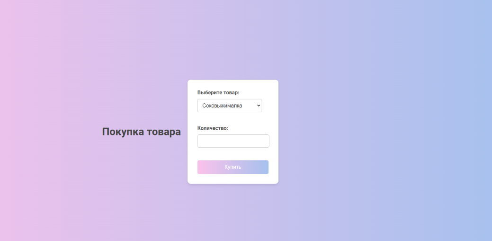

Content-Sity
Город красивого и годного контента
В самом сердце футуристического мира находится город, не похожий ни на один другой. Этот город, известный как Контент Сити, представляет собой огромный мегаполис, который простирается настолько далеко, насколько хватает глаз. Весь горизонт освещен яркими неоновыми огнями, создавая захватывающее зрелище цвета и жизни.
Этот город является центром технологического прогресса, с высокими небоскребами, которые тянутся к небесам, и в каждом из них размещены новейшие разработки. На улицах внизу расположены оживленные рынки, рестораны и развлекательные заведения, где люди из всех слоев общества собираются вместе, чтобы познакомиться с чудесами неонового города.
Но Контент Сити – это не просто место красоты и волнения, это еще и место тайн и интриг. В глубине города ходят слухи о тайном обществе, которое действует в тени, контролируя саму суть существования города. Некоторые говорят, что они обладают технологиями, превосходящими самые смелые мечты, в то время как другие утверждают, что они владеют секретами раскрытия истинного потенциала человеческого разума.
Среди всего этого есть история о легендарной личности, известной как Неоновый Призрак, мстителе, который бродит по улицам города под покровом темноты, сражаясь с коррумпированными силами, угрожающими хрупкому городскому равновесию. Некоторые считают Неонового Призрака героем, символом надежды перед лицом невзгод, в то время как другие видят в нем опасную загадку, угрозу тщательно выстроенному порядку в городе.
По мере того, как Контент Сити продолжает процветать и развиваться, растут и истории, которые его окружают. От мерцающих огней на горизонте до скрытых глубин метро, Неоновый город остается местом чудес и возможностей, где может произойти все, что угодно, и каждый может оставить свой след в мире.

Сoffe shop
Сайт для кофейни Сoffe Shop

Сайт прогноза погоды
Показывает погоду в любом городе мира, с помощью очень точного api.

AutoCliker-Blum
AutoClicker Blum - это адаптированный автокликер для автоматизации сбора звёздочек в играх Blum.

Beautiful Contract Registration
Beautiful registration of a contract with the solar system

ToDoListv2
Можно записывать свои дела и покупки

Data-entry-form
Stool: Seat height, number of legs, material (Табурет Высота сидушки, количествоножек,материал)

Content-Sity
Content-Sity- не только сайт-визитка,но и гора красивого контента

Мини магазин
Мини магазин по продаже кухонной техники с минимальным функционалом